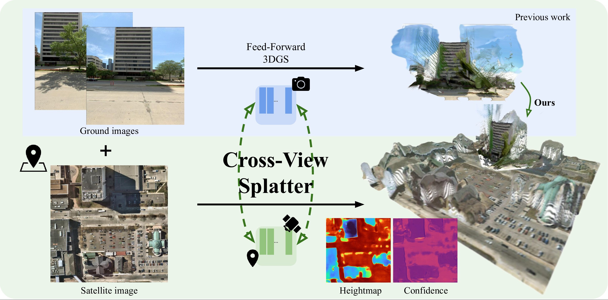
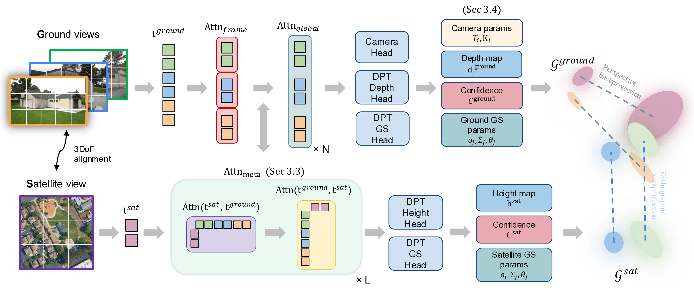
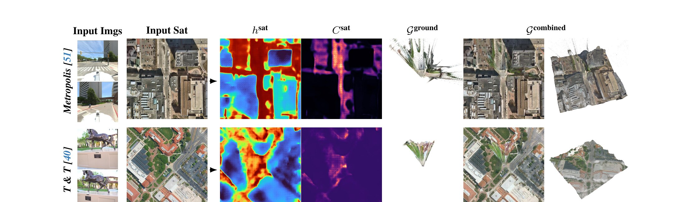
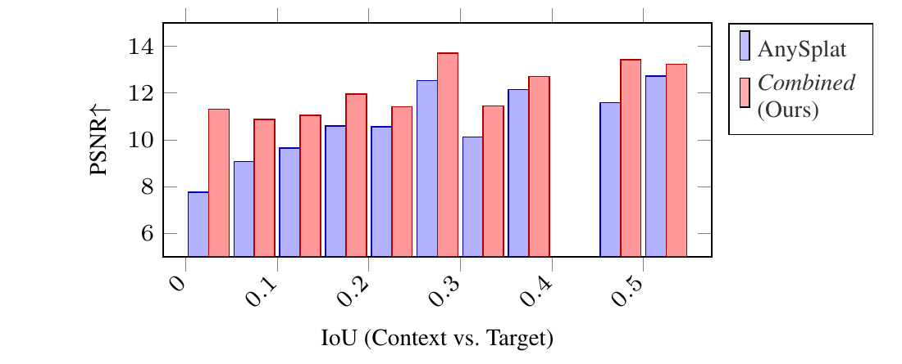

1Aalto University 2Georgia Tech 3Niantic Spatial 4University of Oulu 5ELLIS Institute Finland 6UCL

TL;DR: A feed-forward 3D Gaussian splatting model that fuses GPS-tagged ground photos with orthorectified satellite imagery for improved outdoor novel-view synthesis.
We present Cross-View Splatter, a feed-forward method that predicts pixel-aligned Gaussian splats for outdoor scenes captured at ground level and by satellite. Faithful reconstructions require good camera coverage, but ground imagery is time-consuming and hard to capture at scale for large outdoor scenes. Fortunately, satellite imagery can provide a global geometric prior that is easy to access via public APIs. Cross-View Splatter fuses orthorectified satellite views with GPS-tagged ground photos to predict Gaussian splats in a unified 3D coordinate frame. By aligning ground and bird’s-eye feature representations, our model improves scene coverage and novel-view synthesis compared to ground imagery alone. We train on curated georeferenced datasets and paired satellite–terrain data mined from open mapping services, and evaluate our method on a new benchmark for novel-view synthesis with georeferenced imagery, allowing comparison to prior state-of-the-art methods.
We introduce a new task, view synthesis with georeferenced imagery, where the goal is to synthesize novel views of outdoor scenes from sparse ground-level photos and a single orthorectified satellite image.

Our Cross-View Splatter model adapts the VGGT architecture and directly predicts 3D Gaussian splats in a unified 3D coordinate frame for both ground and satellite images. Ground and satellite images are encoded into a shared feature space via cross-attention, and separate heads regress Gaussian attributes for each branch. The full model is trained on curated georeferenced datasets and paired satellite–terrain data mined from public mapping and elevation sources, and we evaluate it on a new benchmark for georeferenced novel view synthesis.
Example outputs on scenes not seen during training.

Left to right: input ground images, input satellite image, predicted height map, height confidence (black: low, red: high), predicted ground Gaussians, and combined ground + satellite Gaussians.
Benchmark. To support a fair comparison with prior baselines and Cross-View Splatter, we manually geolocalize 10 scenes from Tanks and Temples and 40 from DL3DV — aligning each COLMAP reconstruction to publicly available satellite imagery in a shared coordinate frame. The full list of scenes, alignment data, and instructions for fetching the corresponding satellite tiles will be available in our GitHub repository.
Sparse-view novel-view synthesis on our georeferenced Tanks & Temples and DL3DV benchmarks (2 context views). Our combined ground + satellite reconstruction matches or beats prior feed-forward methods on both datasets. See the paper for the full 1-, 2-, and 3-context-view tables and per-scene breakdowns.
| Method | T&T PSNR ↑ | T&T LPIPS ↓ | DL3DV PSNR ↑ | DL3DV LPIPS ↓ |
|---|---|---|---|---|
| MVSplat | 6.93 | 0.6997 | 6.27 | 0.7174 |
| DepthSplat | 9.61 | 0.6077 | 8.58 | 0.6774 |
| NoPoSplat | 8.97 | 0.6830 | 11.01 | 0.6665 |
| Long-LRM | 8.53 | 0.7054 | 9.74 | 0.6813 |
| AnySplat | 9.85 | 0.5773 | 10.37 | 0.5702 |
| Cross-View Splatter (Ours) | 11.67 | 0.5984 | 12.10 | 0.5940 |
Compared to the AnySplat baseline, we improve PSNR across all overlap bins — with the largest gains at low context-vs-target IoU.

PSNR vs. context/target IoU on geolocalized Tanks & Temples (5% bins).
We thank Zawar Qureshi and Jakub Powierza for compute infrastructure support and Alan Paul for help in generating terrain data. MT, JK, and AS acknowledge funding from the Research Council of Finland (362408, 339730).
If you find this work useful for your research, please consider citing our paper:
@inproceedings{turkulainen2026crossviewsplatter,
title = {{Cross-View Splatter: Feed-Forward View Synthesis with Georeferenced Images}},
author = {Turkulainen, Matias and Krishnan, Akshay and Aleotti, Filippo and Sayed, Mohamed and Garcia-Hernando, Guillermo and Kannala, Juho and Solin, Arno and Brostow, Gabriel and Turmukhambetov, Daniyar},
booktitle = {Proceedings of the IEEE/CVF Conference on Computer Vision and Pattern Recognition (CVPR)},
year = {2026}
}